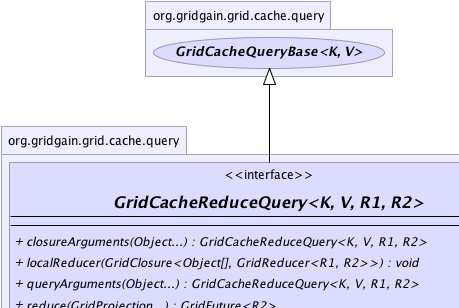
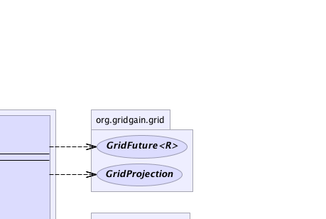
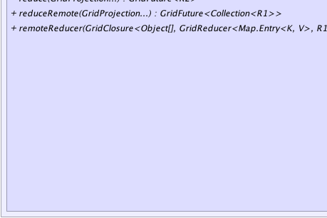
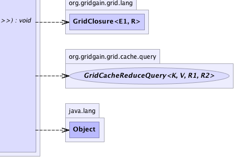

|
|

|

|
|

|

|

|
GridGain™ 3.6.0c
Community Edition |
|||||||||
| PREV CLASS NEXT CLASS | FRAMES NO FRAMES | |||||||||
| SUMMARY: NESTED | FIELD | CONSTR | METHOD | DETAIL: FIELD | CONSTR | METHOD | |||||||||
public interface GridCacheReduceQuery<K,V,R1,R2>
Cache query with possible remote and local reducers. The execution sequence is
essentially identical to the one described in GridCacheQuery javadoc,
except that queried key-value pairs are given to an optional reducer
directly on the queried node and a single reduced value is returned back
to caller node. Then on the caller node, the collection of reduced values
is given to optionally provided local reducer. Based on whether local
reducer is provided or not, either a single value or a collection of
reduced values is returned to user.
GridCacheQuery
documentation.
GridCache<Long, Person> cache = G.grid().cache();
// Calculate average of salary of all employees in some company.
GridCacheReduceQuery<UUID, Person, GridTuple2<Double, Integer>, Double> qry =
cache.createReduceQuery(SQL, Person.class,
"from Person, Organization where Person.orgId = Organization.id and lower(Organization.name) = lower(?)");
// Set remote reducer to calculate sum of salaries and employee count on remote nodes.
qry.remoteReducer(new CO<GridReducer<Map.Entry<Long, Person>, GridTuple2<Double, Integer>>>() {
private GridReducer<Map.Entry<Long, Person>, GridTuple2<Double, Integer>> rdc =
new GridReducer<Map.Entry<Long, Person>, GridTuple2<Double, Integer>>() {
private double sum;
private int cnt;
@Override public boolean collect(Map.Entry<Long, Person> e) {
sum += e.getValue().getSalary();
cnt++;
// Continue collecting.
return true;
}
@Override public GridTuple2<Double, Integer> apply() {
return new GridTuple2<Double, Integer>(sum, cnt);
}
};
@Override public GridReducer<Map.Entry<Long, Person>, GridTuple2<Double, Integer>> apply() {
return rdc;
}
});
// Set local reducer to reduce totals from queried nodes into overall average.
qry.localReducer(new CO<GridReducer<GridTuple2<Double, Integer>, Double>>() {
private GridReducer<GridTuple2<Double, Integer>, Double> rdc =
new GridReducer<GridTuple2<Double, Integer>, Double>() {
private double sum;
private int cnt;
@Override public boolean collect(GridTuple2<Double, Integer> e) {
sum += e.get1();
cnt += e.get2();
// Continue collecting.
return true;
}
@Override public Double apply() {
return cnt == 0 ? 0 : sum / cnt;
}
};
@Override public GridReducer<GridTuple2<Double, Integer>, Double> apply() {
return rdc;
}
});
// Query all nodes to find average salary of all GridGain employees.
double averageGridGainSalary = qry.with("GridGain").reduce(grid).get())
// Query all nodes to find average salary of all employees working for "Other" company.
double averageOtherSalary = qry.with("Other").reduce(grid).get())
| Wiki | |
| Forum |
|  |  |
|  |  |
| Field Summary |
|---|
| Fields inherited from interface org.gridgain.grid.cache.query.GridCacheQueryBase |
|---|
DFLT_PAGE_SIZE |
| Method Summary | |
|---|---|
GridCacheReduceQuery<K,V,R1,R2> |
closureArguments(Object... args)
Optional arguments for closures to be used by GridCacheQueryBase.remoteKeyFilter(GridClosure),
GridCacheQueryBase.remoteValueFilter(GridClosure), GridCacheReduceQuery.remoteReducer(GridClosure), and
GridCacheReduceQuery.localReducer(GridClosure). |
void |
localReducer(GridClosure<Object[],GridReducer<R1,R2>> factory)
Optional local reducer factory to provide reducers for reduction of multiple queried values returned from remote nodes into one. |
GridCacheReduceQuery<K,V,R1,R2> |
queryArguments(Object... args)
Optional query arguments that get passed to query SQL. |
GridFuture<R2> |
reduce(GridProjection... grid)
Executes query on the given grid projection using remote and local reducers and returns a future for the queried result. |
GridFuture<Collection<R1>> |
reduceRemote(GridProjection... grid)
Executes query on the given grid projection using remote reducer and returns a future for the queried result. |
void |
remoteReducer(GridClosure<Object[],GridReducer<Map.Entry<K,V>,R1>> factory)
Optional remote reducer factory to provide reducers for reduction of multiple queried values on queried nodes into one. |
| Methods inherited from interface org.gridgain.grid.cache.query.GridCacheQueryBase |
|---|
className, className, clause, clause, enableDedup, enableDedup, id, includeBackups, includeBackups, keepAll, keepAll, metrics, pageSize, pageSize, readThrough, readThrough, remoteKeyFilter, remoteValueFilter, timeout, timeout, type |
| Methods inherited from interface org.gridgain.grid.GridMetadataAware |
|---|
addMeta, addMetaIfAbsent, addMetaIfAbsent, allMeta, copyMeta, copyMeta, hasMeta, hasMeta, meta, putMetaIfAbsent, putMetaIfAbsent, removeMeta, removeMeta, replaceMeta |
| Methods inherited from interface java.io.Closeable |
|---|
close |
| Method Detail |
|---|
void remoteReducer(@Nullable
GridClosure<Object[],GridReducer<Map.Entry<K,V>,R1>> factory)
GridCacheReduceQuery.closureArguments(Object...)
method ar parameter and returns reducer to reduce queried values.
If factory is set, then it should provide a new instance of reducer for every query execution.
factory - Optional remote reducer factory to create reducers for use on queried nodes.
void localReducer(@Nullable
GridClosure<Object[],GridReducer<R1,R2>> factory)
GridCacheReduceQuery.closureArguments(Object...) method ar parameter and returns reducer to locally reduce
multiple query results returned from remote nodes into one.
If factory is set, then it should provide a new instance of reducer for every query execution.
factory - Optional reducer factory to create local reducers to reduce query results returned
from queried nodes.GridCacheReduceQuery<K,V,R1,R2> queryArguments(@Nullable Object... args)
args - Optional query arguments.
GridCacheReduceQuery<K,V,R1,R2> closureArguments(@Nullable Object... args)
GridCacheQueryBase.remoteKeyFilter(GridClosure),
GridCacheQueryBase.remoteValueFilter(GridClosure), GridCacheReduceQuery.remoteReducer(GridClosure), and
GridCacheReduceQuery.localReducer(GridClosure).
args - Optional query arguments.
@GridEnterpriseFeature(value="Distributed queries are enterprise-only feature (local queries are available in community edition)") GridFuture<R2> reduce(@Nullable GridProjection... grid)
Note that if the passed in grid projection is a local node, then query will be executed locally without distribution to other nodes.
Also note that query state cannot be changed (clause, timeout etc.), except arguments, if this method was called at least once.
grid - Grid projection to execute query on, if not provided, all grid nodes will be used.
@GridEnterpriseFeature(value="Distributed queries are enterprise-only feature (local queries are available in community edition)") GridFuture<Collection<R1>> reduceRemote(GridProjection... grid)
Note that if the passed in grid projection is a local node, then query will be executed locally without distribution to other nodes.
Also note that query state cannot be changed (clause, timeout etc.), except arguments, if this method was called at least once.
grid - Grid projection to execute query on, if not provided, all grid nodes will be used.
|
GridGain™ 3.6.0c
Community Edition |
|||||||||
| PREV CLASS NEXT CLASS | FRAMES NO FRAMES | |||||||||
| SUMMARY: NESTED | FIELD | CONSTR | METHOD | DETAIL: FIELD | CONSTR | METHOD | |||||||||
|
GridGain - Real Time Big Data
|
|
|
|